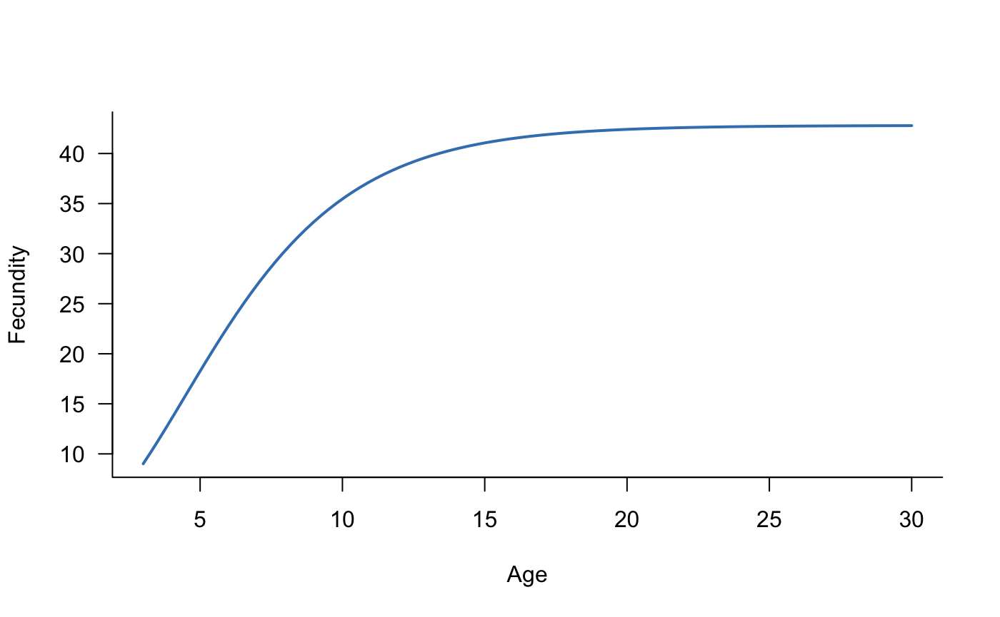
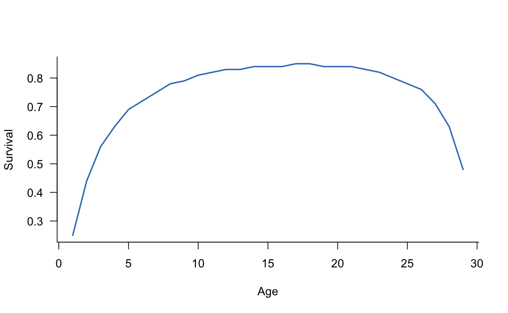
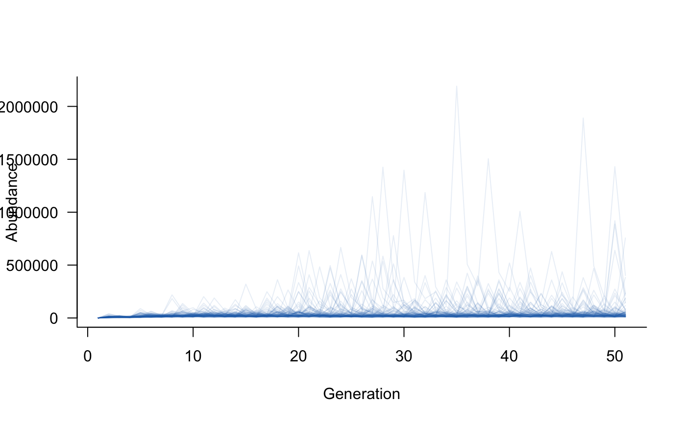
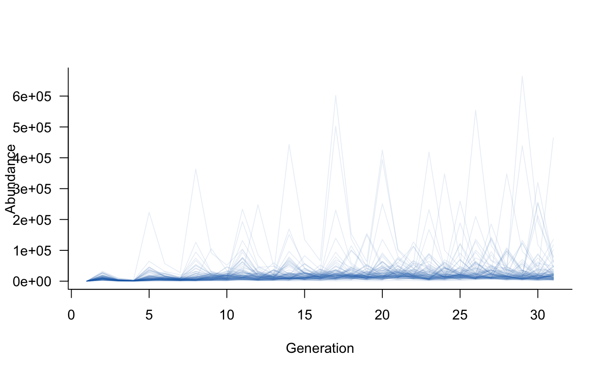
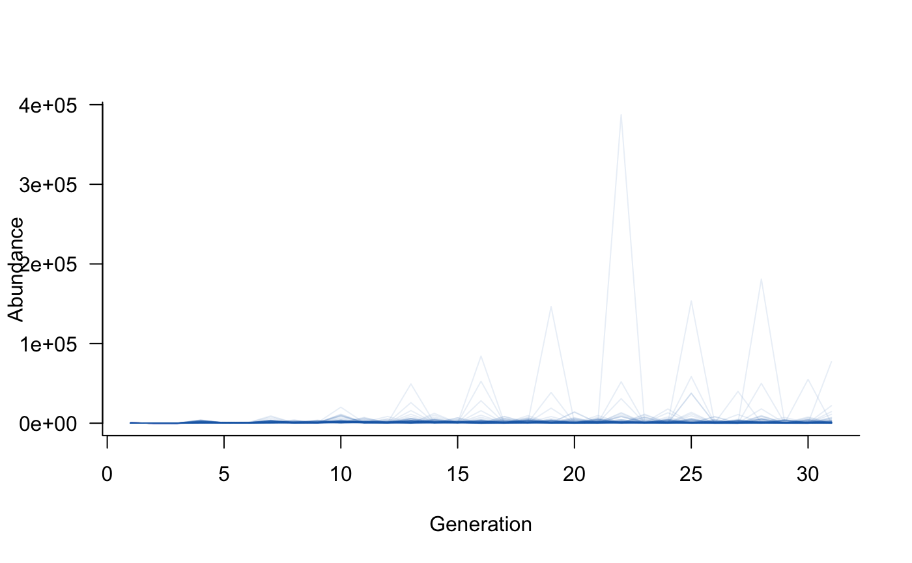
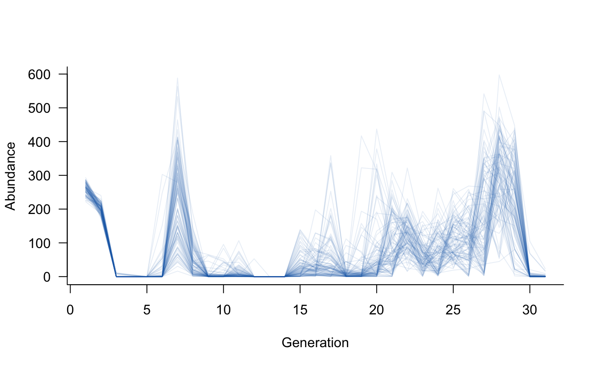
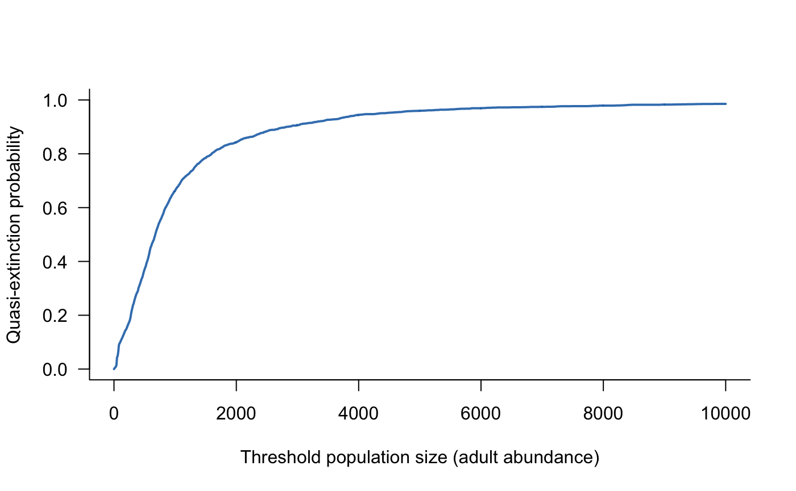
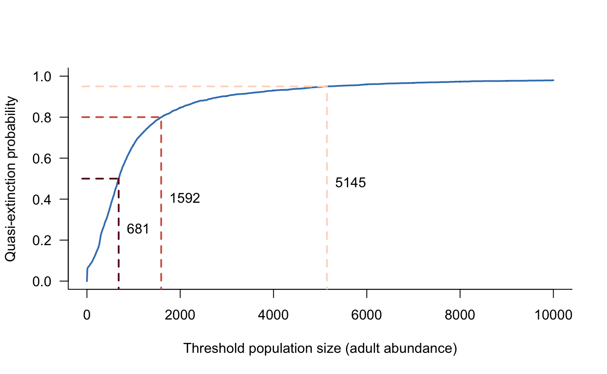

vignettes/macperch_example.Rmd
macperch_example.RmdThis example uses a model of Macquarie perch (Macquaria australasica) population dynamics to illustrate several advanced features of aae.pop. Specifically, this example demonstrates the use of multiple args terms in simulate, complex forms of density dependence, and the use of the args.fn option in simulate, which supports dynamic arguments that depend on the state of the population at each time step.
Macquarie perch is a freshwater fish species native to the Murray-Darling Basin in south-eastern Australia. Macquarie perch is a large (up to 46 cm and 3.5 kg), long-lived (up to 30 years) species, and was historically abundant throughout the southern Murray-Darling Basin, supporting an important recreational fishery until the 1980s. Macquarie perch has since undergone a dramatic decline in range and abundance, to the point where it is now considered locally extinct across much of its former range, and is listed as a nationally endangered species.
The model outlined here includes age-specific survival and reproduction for 30 age classes as well as eggs and larvae. Survival and reproduction are density dependent and spawning success varies among years. This model includes the effects of variable flow conditions and allows individuals (adults or juveniles) to be added or removed from the population in any given year to simulate the effects of stocking or recreational fishing.
The population matrix is the most important part of a population dynamics model. The population matrix for Macquarie perch is substantially more complex than in other vignettes and examples. Notably, this matrix includes 30 age classes, with vital rates defined as functions of age.
Individuals become reproductively mature at 3-4 years, and fecundity increases with age (Todd and Lintermans 2015). The age-fecundity relationship can be characterised with a three-parameter function (derived in Todd and Lintermans (2015)). This relationship is captured in the following R function:
# function to simulate reproductive output of Macquarie perch fecundity <- function( age, # vector of ages mean = c(1.68, -0.302, 2.886), # mean parameters for fecundity function early_surv = c(0.5, 0.013, 0.13) # estimates of early life survival (eggs, larvae, young-of-year) ) { # mean estimates of three model parameters y1 <- mean[1] y2 <- mean[2] y3 <- mean[3] # calculate fecundity y2_term <- exp(y2 * age) y1_y2 <- log(43.15 * exp(- y1 * y2_term)) fec <- exp(2.295 * y1_y2 + y3) # add early life survival and muliply by 0.5 # to account for a 50:50 sex ratio 0.5 * fec * prod(early_surv) } # plot mean fecundity as a function of age age_vec <- seq(3, 30, length = 100) plot(fecundity(age_vec) ~ age_vec, las = 1, type = "l", xlab = "Age", ylab = "Fecundity", bty = "l", lwd = 2, col = scales::alpha("#2171B5", 0.9))

Survival has a peaked relationship with age, increasing in individuals up to approximately 20 years of age and declining from that point onwards (Todd and Lintermans 2015). This relationship is captured in the following parameters:
# define survival parameters survival_params <- c( 0.25, 0.44, 0.56, 0.63, 0.69, 0.72, 0.75, 0.78, 0.79, 0.81, 0.82, 0.83, 0.83, 0.84, 0.84, 0.84, 0.85, 0.85, 0.84, 0.84, 0.84, 0.83, 0.82, 0.80, 0.78, 0.76, 0.71, 0.63, 0.48 ) # plot mean survival as a function of age plot(survival_params ~ c(1:29), las = 1, type = "l", xlab = "Age", ylab = "Survival", bty = "l", lwd = 2, col = scales::alpha("#2171B5", 0.9))

These values are sufficient to construct the (mean) population matrix:
# define population matrix nclass <- length(survival_params) + 1 popmat <- matrix(0, nrow = nclass, ncol = nclass) popmat[transition(popmat, dims = 1:30)] <- survival_params popmat[reproduction(popmat, dims = 3:30)] <- fecundity(3:30) # convert this to a dynamics object and plot it popdyn <- dynamics(popmat) plot(popdyn)
This population matrix is much more complex than the examples in the Getting started vignette, yet this form only supports deterministic projections of Macquarie perch populations with constant vital rates and no other processes operating (e.g., density dependence). The following sections add several additional processes to create a more-complete model of Macquarie perch population dynamics.
Density dependence is introduced in the Including processes vignette. Macquarie perch present an interesting case study, where density dependence operates on both reproduction, through an Allee effect or positive density dependence, and on survival, through a negative, top-down effect of competitive interactions for habitat (Todd and Lintermans 2015). These effects can be captured with the following R functions:
# masks: survival and reproduction of 3-30 year olds density_masks <- list( transition(popmat), reproduction(popmat, dims = 3:30) ) # top-down effects of competition for habitat, # arbitrary carrying capacity of 1000 here # (could be passed as an arg) topdown_fn <- function(mat, pop, ...) { sum_n <- sum(pop[3:30]) ifelse(sum_n > 1000, 1000 / sum_n, 1) * mat } # positive density dependence (Allee effect) allee_fn <- function(mat, pop, allee_strength = 1, allee_factor = 10, ...) { sum_n <- sum(pop[3:30]) allee <- (2 / (1 + exp(-sum_n / (allee_strength * allee_factor)))) - 1 mat <- allee * mat mat } # combine the functions into a list density_fns <- list( topdown_fn, allee_fn ) # and collate masks and functions in a single object dens_depend <- density_dependence( masks = density_masks, funs = density_fns )
The above functions both include ... arguments that are not used in the functions themselves. This is necessary when non-standard arguments are passed to simulate for a given demographic process. In this case, the allee_strength and allee_factor arguments can (optionally) be set directly in a call to simulate, which would pass these arguments to all functions included in the density_dependence object. Without the ... arguments, this would break topdown_fn because it cannot use the allee_strength or allee_factor terms. The ... argument absorbs these extra terms. Although not required in allee_fn, adding ... in this way can be a useful safeguard for models that may be updated in the future.
The population matrix and density dependence defined above are entirely deterministic. This section will add environmental stochasticity to the population matrix, demonstrating the relatively slow rmultiunit function and a trick with the args.fn option to speed up simulate in this situation.
The runit and rmultiunit functions are included in aae.pop to handle situations where stochastic values are required on the unit or [0, 1] interval. There are many ways to simulate values in this interval but commonly used methods do not return values with a known mean, standard deviation, or correlation structure (in the multivariate case). The solution to this involves solving several relatively messy equations to identify transformed means and standard deviations on the real line (i.e., between negative and positive infinity), generating random Normal variates, and converting these back to the unit interval with a cumulative distribution transform. The rmultiunit function does this but is not fast. This is a focus of future development in aae.pop, likely requiring a function written in C++ or similar, low-level language.
The runit function can be used as follows:
# generate 10 random values on the unit line (between 0 and 1) with known mean and sd runit(10, mean = 0.25, sd = 0.2)
## [1] 0.33559412 0.01354525 0.07060994 0.10812194 0.93479295 0.13492053
## [7] 0.04424263 0.03453046 0.45130256 0.06727675# repeat this, but increase the standard deviation, noting the values still sit in [0, 1] runit(10, mean = 0.25, sd = 0.5)
## [1] 1 1 0 0 1 0 0 0 1 0rmultiunit is similar to runit but generates multivariate outcomes, i.e., vectors of values. In this case, the mean and sd are vectors and the replicates determine the number of vectors to be simulated. This approach can also include correlation structure in the simulated values, although this level of detail is unusual in practice due to a lack of information on empirical correlations:
# generate 10 random vectors of 5 values each, on the unit line rmultiunit(10, mean = c(0.5, 0.2, 0.1, 0.9, 0.6), sd = c(0.1, 0.05, 0.05, 0.05, 0.2))
## [,1] [,2] [,3] [,4] [,5]
## [1,] 0.3939735 0.2853072 0.09409237 0.8623073 0.9161126
## [2,] 0.5179323 0.2072803 0.12986126 0.9697224 0.6058093
## [3,] 0.3497532 0.2235739 0.11628360 0.9473978 0.5139187
## [4,] 0.5397205 0.2003411 0.07281396 0.9052345 0.6676988
## [5,] 0.3673924 0.1806111 0.05012865 0.9540447 0.6912178
## [6,] 0.6221911 0.1348598 0.14532454 0.8574427 0.7846602
## [7,] 0.3972538 0.2597779 0.06548694 0.8972685 0.5561895
## [8,] 0.4790801 0.2144535 0.11066527 0.9337883 0.6661865
## [9,] 0.4443096 0.1740153 0.13321791 0.9485680 0.6514108
## [10,] 0.5513246 0.2261484 0.07990790 0.9118337 0.7492187# repeat this, but with a known correlation structure omega_est <- rbind( c(1, 0, 0.15, 0, 0), c(0, 1, 0, 0.75, 0), c(0.15, 0, 1, 0, 0.25), c(0, 0.75, 0, 1, 0), c(0, 0, 0.25, 0, 1) ) unit_sims <- rmultiunit( 10000, mean = c(0.5, 0.2, 0.1, 0.9, 0.6), sd = c(0.1, 0.05, 0.05, 0.05, 0.2), Omega = omega_est )
It is easy to verify that runit and rmultiunit return values with approximately correct means, standard deviations, and correlations. For the final example above, the means are:
## [1] 0.5 0.2 0.1 0.9 0.6and the standard deviations are:
## [1] 0.10 0.05 0.05 0.05 0.20Last, the correlations are:
## [,1] [,2] [,3] [,4] [,5]
## [1,] 1.00 0.00 0.15 0.00 0.00
## [2,] 0.00 1.00 0.00 0.75 0.01
## [3,] 0.15 0.00 1.00 0.00 0.25
## [4,] 0.00 0.75 0.00 1.00 0.00
## [5,] 0.00 0.01 0.25 0.00 1.00Although these values do not match perfectly, they are close and will match increasingly well with more samples.
Forging ahead with the rmultiunit approach, this section will use a related function (rmultiunit_from_real) that includes only part of the rmultiunit calculation. This function takes pre-transformed estimates of the mean and standard deviation, which removes the slowest step from the rmultiunit calculation. This is possible because the mean vital rates only change once per time step (or not at all if covariates are not included), and all other changes to these rates (e.g., density dependence) occur after incorporating environmental stochasticity. Therefore, the conversion of means and standard deviations to the real line can occur once per time step rather than for every single replicate within each time step.
The first step is to define functions to use within an environmental_stochasticity process. These functions will assume means and standard deviations are already converted to their real-line equivalents; this conversion and its use in simulate will be covered below. As introduced in the Including processes vignette, the environmental_stochasticity process adds variation to vital rates through a combination of masks and functions:
# define masks for environmental stochasticity envstoch_masks <- list( transition(popmat), # all survival estimates reproduction(popmat, dims = 3:30) # reproduction from all adults ) # define a survival function, adding dots to soak up extra arguments within simulate survival_gen <- function(mat, mean_real, sd_real, ...) { rmultiunit_from_real(n = 1, mean_real = mean_real, sd_real = sd_real) } # define a reproduction function, being careful with argument names to avoid conflicts # with any arguments in survival_gen, which would then require multiple different # arguments with the same name in simulate reproduction_gen <- function( mat, fec_mean = c(1.68, -0.302, 2.886), fec_sd = c(0.3, 0.05, 0.15), early_mean, early_sd, ... ) { # need a vector of ages, hard coded here (could be an argument) age <- 3:30 # generate stochastic values for early life survival (eggs, larvae, young-of-year) early_real <- rmultiunit_from_real(n = 1, mean = early_mean, sd = early_sd) # otherwise draw random variates for the three model parameters y1 <- rnorm(n = 1, mean = fec_mean[1], sd = fec_sd[1]) y2 <- rnorm(n = 1, mean = fec_mean[2], sd = fec_sd[2]) y3 <- rnorm(n = 1, mean = fec_mean[3], sd = fec_sd[3]) # generate reproduction estimates for all adult age classes, incorporating # stochastic early life estimates y2_term <- exp(y2 %o% age) y1_y2 <- log( 43.15 * exp(sweep(y2_term, 1, -y1, "*")) ) reprod <- exp(sweep(2.295 * y1_y2, 1, y3, "+")) # add early life survival and muliply by 0.5 # to account for a 50:50 sex ratio 0.5 * reprod * prod(early_real) } # combine masks and functions into a single object envstoch <- environmental_stochasticity( masks = envstoch_masks, funs = list(survival_gen, reproduction_gen) )
The conversion of means and standard deviations from the unit interval to real-line equivalents is supported by the unit_to_real function. This function can be wrapped up and passed to simulate with the args.fn option. This option allows functions to define the arguments to demographic processes based on three inputs: the population dynamics object, the state of the population at a given time step, and the iteration index (i.e., the current year or generation). An alternative approach is to use the args.dyn option, which takes a list of arguments, with one element for each time step.
In this example, args.fn requires a function that takes the survival estimates (on the unit interval) and converts these to their real-line equivalents. This conversion requires information on the standard deviations, as well as survival estimates for early life stages (eggs, larvae, young-of-year):
transform_survival <- function(obj, pop, iter) { # pull out the population matrix in the current time step mat <- obj$matrix if (is.list(mat)) mat <- mat[[iter]] # wrap up all survival means and SDs, including early life # (this allows a single call to `unit_to_real`, which is slow) survival_mean <- c( 0.5, 0.013, 0.13, # early life mat[transition(mat)] # from population matrix in current time step ) survival_sd <- c( 0.1, 0.007, 0.028, # early life 0.05, 0.09, 0.11, 0.10, 0.10, 0.07, 0.08, 0.08, 0.08, 0.08, 0.08, 0.08, 0.08, 0.08, 0.08, 0.08, 0.08, 0.08, 0.08, 0.08, 0.08, 0.08, 0.08, 0.08, 0.08, 0.08, 0.07, 0.06, 0.05 ) # convert unit interval to real line equivalents out <- unit_to_real( unit_mean = survival_mean, unit_sd = survival_sd ) # separate early life from other estimates idx <- seq_len(nrow(out)) > 3 # return list(mean_real = out[idx, 1], # for survival_gen sd_real = out[idx, 2], # for survival_gen early_mean = out[!idx, 1], # for reproduction_gen early_sd = out[!idx, 2] # for reproduction_gen ) }
An additional process in the model of Macquarie perch population dynamics is the inclusion of stocking or fishing. These processes could be included directly in the population matrix through their effects on survival and reproduction. This section demonstrates an alternative way of accounting for the addition or removal of individuals, using the density_dependence_n construct, which allows density-dependent changes to the population vector (i.e., abundances) following all other updates. This approach requires a mask that selects the classes of the population affected, as well as a function that determines how population abundances are altered.
# take a population vector and update it to add or remove n individuals # split into two stages (juveniles, adults) dd_n <- function(pop, n, add = TRUE) { # are we removing individuals? if (!add) { # check that there are enough juveniles if (n[1] > sum(pop[1:2])) { n[1] <- sum(pop[1:2]) warning("removing more juveniles than available;", " total removals reduced to ", sum(pop[1:2]), call. = FALSE) } # check that there are enough adults if (n[2] > sum(pop[3:30])) { n[2] <- sum(pop[3:30]) warning("removing more adults than available;", " total removals reduced to ", sum(pop[3:30]), call. = FALSE) } # expand n to remove from random age classes n_juvenile_by_age <- rep(1:2, times = pop[1:2]) juvenile_idx <- sample.int( length(n_juvenile_by_age), size = n[1], replace = FALSE ) n_juvenile <- table(n_juvenile_by_age[juvenile_idx]) n_adult_by_age <- rep(3:30, times = pop[3:30]) adult_idx <- sample.int( length(n_adult_by_age), size = n[2], replace = FALSE ) n_adult <- table(n_adult_by_age[adult_idx]) } else { # sample random classes to add individuals n_juvenile <- table( sample(1:2, size = n[1], replace = TRUE) ) n_adult <- table( sample(3:30, size = n[2], replace = TRUE) ) } # convert from a vector of classes to a count for each class n_juvenile_expanded <- rep(0, 2) names(n_juvenile_expanded) <- as.character(1:2) n_juvenile_expanded[names(n_juvenile)] <- n_juvenile n_adult_expanded <- rep(0, 28) names(n_adult_expanded) <- as.character(3:30) n_adult_expanded[names(n_adult)] <- n_adult n <- c(n_juvenile_expanded, n_adult_expanded) # adding is the opposite of removing if (add) n <- -n # update pop abundances and return pop - n } # wrap this up in a density_dependence_n object dens_depend_n <- density_dependence_n( masks = all_classes(popmat), funs = dd_n )
The dd_n function above is entirely deterministic and static, that is, a fixed number of individuals is added or removed each and every time step. An extension of this approach could set the number of individuals stochastically (e.g., as a Poisson random variable) and could make the number of individuals change through time. For example, the args.fn or args.dyn options could pass a time-varying value of n, or the dd_n function could use pop (actual abundances) to define a density-dependent addition or removal scenario. These extensions are not shown here but an example of the args.fn approach is included in the macquarie_perch template to simulate changes in fishing regulations or stocking through time.
The final demographic process included in the Macquarie perch population model is (deterministic) covariate effects on vital rates. The definition of these effects assumes that the vital rates shown above are maximum values, with covariates reducing survival or recruitment relative to these maximum values. Covariates are included for four patterns observed in Macquarie perch in Lake Dartmouth:
Recruitment of young individuals has a peaked relationship with discharge in November and December. Recruitment is reduced if discharge is below 50 % or above 100 % of the long-term average in this period.
Recruitment is reduced if discharge is highly variable during November and December.
Recruitment is reduced if lake level is increased substantially relative to the previous year.
Adult survival is reduced if discharge into the lake drops below 100 % of the long-term average.
Several of these effects relate to river discharge rather than lake conditions because adults from this population move from the lake into the adjacent river channel to spawn.
These covariate effects can be captured with the following masks and functions:
# effect 1: recruitment has peaked association with Nov/Dec discharge recruit_peaked <- function(mat, x, ...) { # define a quadratic association with log-transformed discharge log_discharge <- log(x$spawning_discharge + 0.01) scale_factor <- exp(-0.1 * log_discharge - 0.1 * (log_discharge ^ 2)) # make sure values are in the [0, 1] range scale_factor[scale_factor > 1] <- 1 scale_factor[scale_factor < 0] <- 0 # return re-scaled recruitment values mat * scale_factor } # effect 2: recruitment reduced in variable Nov/Dec conditions recruit_variability <- function(mat, x, ...) { mat * exp(-0.05 * x$spawning_variability) } # effect 3: recruitment reduced with rising lake level recruit_level <- function(mat, x, ...) { mat * (1 / (1 + exp(-0.5 * (x$water_level_change + 10)))) } # effect 4: adult survival reduced by low-discharge conditions adult_low <- function(mat, x, ...) { # define a quadratic association with log-transformed discharge log_discharge <- log(x$average_daily_discharge + 0.01) scale_factor <- exp(0.3 * log_discharge - 0.3 * (log_discharge ^ 2)) # make sure values are in the [0, 1] range scale_factor[scale_factor > 1] <- 1 scale_factor[scale_factor < 0] <- 0 # return re-scaled survival values mat * scale_factor } # define masks covar_masks <- list( reproduction(popmat), reproduction(popmat), reproduction(popmat), transition(popmat, dims = 3:30) ) # link functions to masks covar_funs <- list( recruit_peaked, recruit_variability, recruit_level, adult_low ) # collate into a single object covars <- covariates( masks = covar_masks, funs = covar_funs )
The three recruitment effects all share the same mask, so there is no reason they could not be included in a single function. Separating these effects is useful because it allows effects to be added or removed easily without editing the underlying functions.
All four functions also share the same input covariate, x, with subsetting occurring within the functions using R’s $ subsetting approach. This requires that x is passed as a data.frame with column names matching those used in the functions (spawning_discharge, spawning_variability, water_level_change, average_daily_discharge). The definition and inclusion of covariates in simulate is shown in the following section.
With demographic processes defined, it is straightforward to define a dynamics object. Here, we can simply update the dynamics object defined earlier:
# update previously defined population dynamics object # (which only included popmat) popdyn <- update( popdyn, covars, envstoch, dens_depend, dens_depend_n )
Simulating from this object requires a call to simulate, also recalling that at least one args.fn is required here to transform survival values from the unit interval to their real-line equivalents:
# simulate, using the transform_survival function defined above # to update arguments passed to environmental_stochasticity and # adding arguments to specify 100 juveniles and 10 adults # removed per time step (e.g., due to fishing) sims <- simulate( popdyn, nsim = 100, args = list(density_dependence_n = list(n = c(100, 10), add = FALSE)), args.fn = list(environmental_stochasticity = transform_survival) ) # plot the simulated trajectories plot(sims, col = scales::alpha("#2171B5", 0.1))

The simulated abundances are extremely high given expected population sizes in this system. The primary reason for this is that the model assumes ideal conditions in each year, with covariate effects used to reduce vital rates to match actual conditions. Covariates can be added to this model with the following code, noting that the same popdyn object can be used with or without covariates:
# simulate 30 years of covariate values based on ranges in # actual discharge data (covariates and functions # are defined based on standardised flow values) covar_values <- data.frame( spawning_discharge = runif(30, min = 0.5, max = 2), spawning_variability = runif(30, min = 0.3, max = 3), water_level_change = rpois(30, lambda = 1), average_daily_discharge = exp(rnorm(30, sd = 2)) ) # simulate sims <- simulate( popdyn, nsim = 100, args = list( density_dependence_n = list(n = c(0, 0)), # remove no individuals this time covariates = format_covariates(x = covar_values) # pass formatted covariate values ), args.fn = list(environmental_stochasticity = transform_survival) ) # plot the simulated trajectories plot(sims, col = scales::alpha("#2171B5", 0.1))

The simulated trajectories now look much more realistic. Here, large values reflect young individuals, many of which do not survive to adulthood. Plotting older classes alone highlights this effect:


The model developed here can be used to forecast Macquarie perch population dynamics on any time scale (e.g., years, decades). One application is the generation of accurate predictions of population dynamics on relatively short time scales (1 or 2 years). Generating accurate predictions is challenging, even on short timescales, and requires reliable estimates of initial conditions and future covariates. Applications of this type can use the direct outputs of a simulation, using replicate trajectories to characterise the distribution of possible states on short time scales.
An alternative application is the comparison of hypothetical scenarios on longer time scales. This approach emphasises relative changes in population size or structure, with accuracy less important than relative differences among scenarios. Applications of this type require summaries of population trajectories over long time scales. Examples of these summaries include extinction or quasi-extinction risk, minimum observed population size, or effective population size if appropriate genetic information is available. This section will demonstrate calculations of several of these metrics, noting that bespoke metrics will be applicable in many situations.
A common and simple summary metric is extinction or quasi-extinction risk, which is the probability a population will fall to zero individuals (extinction) or below a specified threshold (quasi-extinction). This example will focus on quasi-extinction because it is more general. The rationale behind quasi-extinction is that, below some threshold, the population will be unable to recover sufficiently to be viable in the future. The threshold is typically assumed to reflect the point at which inbreeding becomes prevalent. In population modelling terms, quasi-extinction risk is the proportion of replicate trajectories that fall below a given threshold at any time step. This can be calculated with the following function:
# calculate proportion of trajectories falling below a given threshold # in any time step. By default, all population classes are included # but `subset` can be used to select specific classes calculate_quasi_extinction <- function(popsim, threshold, subset = NULL, include = FALSE) { # is a subset required? if (!is.null(subset)) popsim <- subset(popsim, subset = subset) # sum population abundances over all remaining classes popsim <- apply(popsim, c(1, 3), sum) # do we want to include the threshold value in the check? if (include) threshold <- threshold + 1e-5 # is a trajectory below a threshold? threshold_check <- apply(popsim, 1, function(x) x < threshold) # return proportion below threshold # (mean of binary values is the proportion equal to 1) mean(threshold_check) }
This function can be used to explore many different outputs:
# probability of 10 or fewer adults calculate_quasi_extinction(sims, threshold = 10, subset = 3:30, include = TRUE)
## [1] 0.03612903# probability of 1000 or fewer individuals calculate_quasi_extinction(sims, threshold = 1000, include = TRUE)
## [1] 0.06290323# probability of extinction of very old individuals calculate_quasi_extinction(sims, threshold = 0, subset = 21:30, include = TRUE)
## [1] 0.9287097These numbers indicate a relatively low risk of falling below threshold population sizes at the population level but do highlight a moderate risk of extinction of older individuals (21-30 years) during the 30 year modelled time period.
A more general output builds on the concept of quasi-extinction but extends this to consider a range of thresholds. This information can be captured in a risk curve that presents the probability of falling below any given threshold during the simulated time period. This output can be calculated with the following function, which uses the calculate_quasi_extinction function repeatedly with different values of threshold:
# function to calculate quasi-extinction risk for multiple thresholds calculate_risk <- function(popsim, min, max, n = 1000, subset = NULL, include = TRUE) { # create a sequence of threshold values thresh_seq <- seq(min, max, length = n) # calculate risk across the entire sequence and return # a data.frame with threshold and risk values data.frame( threshold = thresh_seq, risk = sapply( thresh_seq, calculate_quasi_extinction, popsim = popsim, subset = subset, include = include ) ) } # calculate risk curve for thresholds from 0 to 10000 risk_calc <- calculate_risk(sims, min = 0, max = 10000, subset = 3:30) # this can be plotted plot(risk ~ threshold, data = risk_calc, xlab = "Threshold population size (adult abundance)", ylab = "Quasi-extinction probability", las = 1, bty = "l", type = "l", lwd = 2, col = scales::alpha("#2171B5", 0.9), ylim = c(0, 1))

A risk curve provides information on the likelihood of hitting any given population size at any point in time. This information can also be presented as the abundance that a population is likely to reach with some fixed probability. For example, it can be useful to state the abundance a population will reach with 50 %, 80 %, or 95 % probability. This information can be extracted from the risk curve with the following code:
# function to calculate threshold abundance reached with probability = prob calculate_threshold <- function(risk, threshold, prob = 0.8) { # find the rows in risk nearest to prob idx <- sapply(prob, function(x) which.min(abs(risk - x))) # then pull out and return these threshold values threshold[idx] } # calculate these thresholds probs <- c(0.5, 0.8, 0.95) thresh <- calculate_threshold(risk_calc$risk, risk_calc$threshold, prob = probs) # plot these on the risk curve plot(risk ~ threshold, data = risk_calc, xlab = "Threshold population size (adult abundance)", ylab = "Quasi-extinction probability", las = 1, bty = "l", type = "l", lwd = 2, col = scales::alpha("#2171B5", 0.9), ylim = c(0, 1)) col_pal <- c("#67001F", "#D6604D", "#FDDBC7") for (i in seq_along(thresh)) { lines(c(thresh[i], thresh[i]), c(-0.2, probs[i]), col = col_pal[i], lwd = 2, lty = 2) lines(c(-100, thresh[i]), c(probs[i], probs[i]), col = col_pal[i], lwd = 2, lty = 2) text(x = thresh[i], y = (probs[i] / 2), round(thresh[i]), pos = 4) }

Todd, Charles R., and Mark Lintermans. 2015. “Who Do You Move? A Stochastic Population Model to Guide Translocation Strategies for an Endangered Freshwater Fish in South-Eastern Australia.” Ecological Modelling 311: 63–72. https://doi.org/10.1016/j.ecolmodel.2015.05.001.